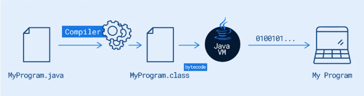

O que é java?
A linguagem de programação Java é uma plataforma de programação, criada em 1995 pela empresa Sun Microsystem. É chamada de plataforma pois é responsável tanto pelo desenvolvimento quanto pela execução do programa. É uma linaguem de alto nível orientada à objetos. Conta com uma máquina virtual que garante independência de plataforma, pois o código é executado na própria maquina virtual. A ferramente responsável por agregar essa máquina virtual é a JRE Java Runtime Enviroment, além de adicionar mais algumas funções. Também, ao instalar a linguagem, o JDK Java Development Kit é instalado, sendo responsável por oferecer suporte ao desenvolvimento de aplicações.
Os arquivos são escritos com a extensão ".java", e posteriormente são compilados para arquivos de extensão ".class", que , por sua vez, contêm os códigos a serem executados na máquina virtual, os bytecodes.

História do Java
O projeto começou com o nome Oak, mas foi renomeado para Java em 1995 devido a questões de marca registrada. O nome "Java" foi inspirado no café Java, muito apreciado pela equipe de desenvolvimento. Inicialmente, o objetivo do projeto era criar uma linguagem para dispositivos eletrônicos, como TVs interativas e eletrodomésticos inteligentes. No entanto, com o crescimento da internet, o Java foi adaptado para resolver o problema de portabilidade de software, permitindo que o mesmo código fosse executado em diferentes plataformas sem modificações. Essa característica foi viabilizada pela Java Virtual Machine (JVM), que tornou o lema "Write Once, Run Anywhere" (Escreva uma vez, execute em qualquer lugar) uma realidade
O java é gratuito?
A linguagem desde seu lançamento vem sofrendo diversas melhorias e evoluções, o que permitiu que a linguaguem se mativesse ativa e influente no meio do desenvolvimento. Segundo site da Oracle, Java é gratuito apenas para estudos e testes, já para desenvolvimento em ambiente comercial é necessário desembolso do valor do licenciamneto.
Como usar o Java?
O Java como plataforma de computação é muito utilizado, pois existe um grande número de aplicações para computador, sites e aplicativos que dependem do Java para funcionar. Por isso, é muito comum a pergunta: “Eu preciso do Java no meu computador?”. Para executar as aplicações Java no nosso computador é necessária a instalação do ambiente de execução do Java ou JRE. Ela é uma camada de aplicação e é instalada no sistema operacional, fornecendo a biblioteca de classes e os recursos necessários para a execução do código Java pela JVM. Como exemplo de aplicações que precisam do Java para funcionar, temos o aplicativo do Imposto de Renda de Pessoa Física (IRPF), utilizado pelo Ministério da Fazenda do Brasil. Aliás, muitos aplicativos oficiais do governo brasileiro foram desenvolvidos com o Java, como os utilizados para a Declaração do Imposto de Renda. Para configurar o Java em seu computador, executar aplicativos e componentes criados em Java, você pode baixar a JRE na página oficial da plataforma e efetuar a instalação para o sistema operacional de sua escolha.